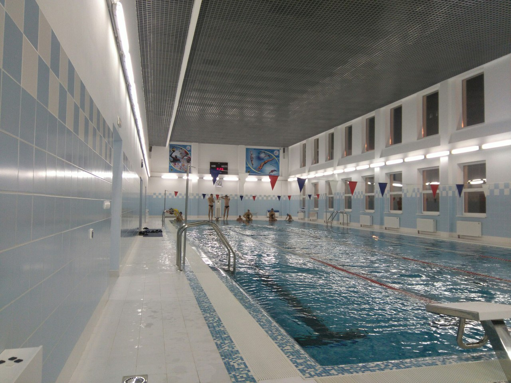

Тренировки
тренировки исходя из следующих
принципов:
1. Большинство заданий должно выполняться в средней
интенсивности.
2. Для стайеров и марафонцев работа над выносливостью
приоритетнее работы над скоростью, соотношение 10 к (1-3), мне кажется разумным.
3. Основные методы тренировок - объемы и интервалы.

Основными задачами методов тренировки
являются
1. Совершенствование техники плавания.
2. Повышение
выносливости.
3. Повышение скорости.
Тренировки проводятся ежедневно, в конце недели проводится контроль результатов которые заносятся в протоколы.(ссылка на результаты и видео отчет представлена ниже)